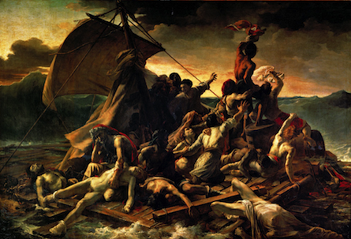

THEORIZING 21C
Voices of the Ordinary; A Brazilian Song
Carl E. Kandutsch
"Uttering a word is like striking a note on the keyboard of the imagination."
Ludwig Wittgenstein, Philosophical Investigations, § 6
I. Prefatory remarks: The occasion of this essay
This article will have succeeded in achieving its purpose to the extent that it accurately accounts for the occasion of its writing. It is not written to prove or argue a point, to uncover new evidence, to elaborate a new theory, or even to intervene in any ongoing conversation concerning music, ordinary language philosophy, aesthetics, or any other current topic of which I am aware. This writing aspires to the condition of philosophy in the sense that it seeks to articulate the conditions that underlie its production. More specifically, the writing is occasioned by an intuition responding to a particular song, and its purpose is, to paraphrase Emerson, to suggest a tuition for that intuition; in other words, to test the validity of the intuition by outlining terms of criticism for what may be heard in the song. [1]
The song is called "Diariamente" in Portuguese, which can be translated into English as "Everyday," or "Daily." It represents an instance of contemporary "musica popular brasileira" or "MPB," written by Nando Reis (born 1963), formerly the bassist and lead singer of the rock band Titas. In this essay I focus on a live performance in 1995 by Marisa Monte, which can be viewed online at https://www.youtube.com/watch?v=873oaywNJws.
For reasons that I hope will become obvious, it is important to me that the song falls within the category of "popular music" rather than "high art" because the popular form suggests that whatever the song has to communicate, its pertinence is not limited to any particular group of people but general. It is likewise important that the singer in this performance is Marisa Monte, an artist of impeccable taste who by virtue of her choice of material and the sheer quality of her singing voice seems, more than any other popular artist I know, uniquely capable of revealing something of the nature of the voice in popular song generally. Finally, it is important to me that the title of the song is "Diariamente" or "Everyday," because it implies that the song addresses something about everyday experience or the experience of the everyday--the ordinariness of the ordinary.
With those points in mind, my intuition, to be spelled out later in this essay, is that the performance of the song (the singer's voice singing this song in this performance) is telling us, to the extent we respond to its appeal, something about the human voice, or, more precisely, the voice of the human--by which I mean the same "voice" that is appealed to in and constitutes the fundamental data for philosophical thinking that proceeds from (and to) ordinary language. Of course, referring to the "data" from which ordinary language philosophy proceeds (and to which it returns) will require some justification, but to begin I will discuss a certain confluence between our capacity to know and articulate "what we say" and our capacity to know and articulate what a work of art is "about."
Claims about Ordinary Language and Works of Art
When the ordinary language philosopher claims to know what we say and when, he or she really is claiming to know (as opposed to predicting) what other English speakers say and mean when they speak, and to know this with a confidence that is hardly subject to doubt, but at the same time cannot be proved--if proving means appealing to some standard other than our ability talk to each other and be understood. If we ask ourselves what sort of knowledge this is, we must bear in mind that the only evidence that could possibly count for or against the philosopher's claim is what you yourself would say in the circumstance imagined, which means that the kind of truth revealed in the appeal to ordinary language is based on no foundation other than what we (speakers of a common language) actually do and say.
Judgments concerning the significance of a work of art seem to imply a similar modality in that an aesthetic claim goes beyond assertion of a personal (private) preference to claim something about the "object itself," something with which others are expected to agree. In Section 8 of the Critique of Judgment, Kant writes that judgments concerning the beautiful (as opposed to the agreeable) are declared with a "universal voice" (allgemeine Stimme) that expects assent (Einstimmung) from others. [2] Of course, it may turn out that others do not agree with my aesthetic judgment concerning the significance of an art work, just as another may not agree with my claim concerning "what we say." [3] In both cases, the only way to assess the validity of the claim is to try it out for oneself. Our knowledge is in each case groundless--because if there is disagreement, it cannot be settled by appeal to evidence or rules or to anything apart from one's own experience of the matter--but not therefore deficient. Disagreements involving ordinary language and aesthetic matters seem to imply a failure of "attunement" (Einstimmung), which, if not resolved, may lead us to conclude that we do not speak the same language, that we experience the world differently. This confluence between assertions about "what we say" and assertions about what a work of art is about seems pertinent inasmuch as the point of this essay is to say that the song in question is exactly "about" our capacity to know what we say and how to say it.
II. Appeals to What We Say--Listening
So-called "ordinary language philosophy"--by which I mean the diagnosis of philosophy's self-deceptions by way of appeal to what we say and when as practiced by J.L. Austin in the mid-20th century--has provided something more than a method of disarming the pretensions of academic philosophy in the name of common sense. [4] Apart from Austin, other sensibilities informed by a sense of the ordinariness of the ordinary include Ludwig Wittgenstein and his strongest interpreter Stanley Cavell. These writers in particular deploy the appeal to what we say for the purpose of revealing how our habitual lack of attention to the varied textures of our own day-to-day lives expresses an apparently irresistible compulsion to seek transcendence of our common humanity, not only in the realm of the pure thought ("concepts," "forms," "universals," "theory," etc.) but also in the certainties promised by religion, politics, mass entertainment, and other resources of distraction. For Wittgenstein and Cavell in particular, the appeal to ordinary language is required in order to undo--not once and for all but to continually resist, as a recurrent temptation is resisted through resolve--ways of speaking and behaving that systematically leave what Wittgenstein calls our "true needs" not only unsatisfied but not even recognized as needs at all. [5] Whether this devaluation of diurnal existence is a distinctly modern phenomenon or something more general (perceived by Nietzsche as the all-too-human repudiation of the human) remains an open question, but Wittgenstein's reference to "the darkness of this time" in the Preface to Philosophical Investigations [6] clearly encompasses something more than just particular circumstances prevailing in Europe around the time of the Second World War.
Resistance to Ordinary Language Procedures
In its most elementary form, the appeal to ordinary language as practiced by Austin and Wittgenstein provides a method of reminding ourselves of how and when words designating certain philosophical concepts are actually used in our daily lives. The appeal to what we say--insofar as ordinary linguistic usage is philosophically authoritative in ways that must be established [7]--demonstrates that some of the most perplexing conundrums in the Western philosophical tradition amount to a kind of nonsense. But the purpose of the appeal is not so much to accuse philosophy of "misusing words" as to recall that in ordinary circumstances the meaning of our words, thus our possibility of meaning anything at all, is always conditioned upon the fact that words are used--spoken (or written) by a particular person in a particular circumstance, for a particular purpose within a community of speakers. Reminding ourselves of what we say and when, we realize that the meaning of what we say hinges on the fact that we say it on a particular occasion in which it makes sense to say it, in which saying it has a point. [8]
That the appeal to what we say provides a way of reminding ourselves [9] indicates that our access to this sort of philosophical insight does not require access to any new information beyond what any native speaker of the language already knows. That an appeal is required suggests that our access to what we already know is not transparent. We need to be reminded, and not only when we reflect on the nature of linguistic meaning, because our access to the significance of what we say and do is, for the most part and most of the time, blocked. We encounter resistance, but the resistance is removed with the realization that it is not our words and concepts that are obscure but we who have misled ourselves, insisting always on other and further significance beyond or above or behind the meaning that is nearest and closest. Thus, ordinary language procedures are useful and necessary to the extent that we live most of our lives in a state of self-imposed confusion. The fact that our access to what we say is, for the most part, occluded accounts for the peculiar sense of revelation, of something dawning upon us, that attends a successful appeal to ordinary language. This is the mood in which Wittgenstein perceived the difficulty of his way of philosophizing as rooted in our difficulty in noticing what is after all obvious:
The aspects of things that are most important for us are hidden because of their simplicity and familiarity. (One is unable to notice something--because it is always before one's eyes.) Unless that fact has at some time struck him. And this means: we fail to be struck by what, once seen, is the most striking and most powerful. [10]
Preserving this aura of paradox, we may say that ordinary language philosophy, properly articulated, provides one way in which we may experience the everyday as extraordinary and remarkable. That peculiar sense of revelation, of something dawning, is, I believe, deeply connected with the sense of discovery released upon our apprehension of a (successful) work of art. Both are avenues of self-discovery, possible only when we allow ourselves to attend to our own experience with the same precision that is otherwise reserved for matters of extraordinary import. [11]
An Example: "Voluntary" Actions
Consider this well-worn example, used in Cavell's early essay called "Must We Mean What We Say?" and derived from J.L. Austin's 1956 paper, "A Plea for Excuses": if we imagine someone saying in ordinary circumstances (on an occasion in which such an expression would normally be uttered) "she dresses like that voluntarily," we understand the speaker to mean that there is something odd or peculiar about her way of dressing. On the one hand, the fact that the speaker's words must be taken in this way indicates that the speaker's meaning is not determined solely by his intentions. On the other hand, as Cavell observes, the peculiar force of this "must" is not easily classified according to traditional categories of logic. For instance, the "must" does not record logical necessity of the kind that characterizes statements that are analytically true ("all bachelors are unmarried"). If you look up the word "voluntary" in a dictionary, you won't find any reference to oddness or peculiarity, and that is because the dictionary meaning of a word doesn't tell us how the word is used by speakers or what its use in an utterance implies in any given circumstance. So while noticing what must be meant by the utterance is not noticing a logical necessity, it nonetheless records an imperative of some sort--an imperative that does not depend on the speaker's wishes, desires, or intentions.
This is not to say that one cannot utter the words "she dresses like that voluntarily" and mean something other than that her way of dressing is peculiar; however, in order to make that possibility intelligible, we must imagine some special circumstance for the utterance to make sense. To imagine someone just flatly asserting "she dresses like that voluntarily," without any special context, and without meaning to imply that her clothing is peculiar is to imagine the sentence being uttered for no reason at all, pointlessly. An assertion without any intelligible point has no meaning. (Although Austin's and Wittgenstein's examples involve words traditionally associated with philosophical concepts [as the word "voluntary" is traditionally associated with philosophical concepts like intention, will, freedom, etc.], the point is generally true of language, and not just of assertions. If I ask you, "Would you like to come to my home for dinner?" I am not inquiring about your state of mind; I am offering to make dinner for you. Unless special circumstances are imagined, to ask the question without intending to offer an invitation would at best be interpreted as a strange kind of joke.) To speak pointlessly is to babble, and the fact that even outside of an appropriate context the words themselves seem to retain their dictionary meanings and are ordered in accordance with grammatical rules cannot save the sentence as a significant utterance. [12] The dictionary meanings of our words cannot compensate for our failing to mean our words when we speak, cannot give significance to words spoken in emptiness.
The sense in which our words must mean what the speaking of those words implies is rooted in the fact that when we recall what we say and when we do more than gather data concerning linguistic usage, we also discover something about the world. When we recall the occasions on which and how we use the word "voluntary," we discover what a voluntary action is, what counts as a voluntary action in the world. Imagine someone who insists on characterizing all "normal" actions--for example, her dressing in the usual, unremarkable way--as "voluntary" to the extent that her getting dressed is the act of a human agent exercising her free will, without implying that there is something odd about her way of dressing. In such a case we would have to conclude that the speaker does not mean by "voluntarily" what we mean by that word, because our normal ordinary actions are neither voluntary nor involuntary. [13] Paraphrasing a passage from Wittgenstein's Philosophical Remarks, it is nearly impossible for us to notice the ordinariness of our normal actions--including our normal use of words--because our normal behavior constitutes the way we act--and speak: "We never give it a thought and it's impossible we should, since there is nothing that contrasts with the form of our world." [14] The fact that it is nearly impossible for us to notice the ordinariness of the ordinary, suggests why it is nearly always extraordinary when we succeed in attending to or being struck by the ordinary.
Words and the World--Why We Talk
Recalling what we say can reveal the world because our concepts of the world express human concerns and interests that are shared among speakers of a language. This is shown by the fact that utterances without any intelligible point or purpose are also without any intelligible meaning. Our concepts are not predicated of the world without purpose. Stated otherwise, an assertion (or question) where there is no discernable reason to assert (or question) is not an assertion (or question) about the world. The parts of the world revealed in and by what we normally say when we say it are (count as) parts of the world insofar as they are shaped and fixed by our human interests; accordingly, the concepts embodied in ordinary words express what it is in the world that we find to be worth talking about. [15] For example, in order to mean something, the assertion "she dresses like that voluntarily" must have a point, a reason for being asserted in a particular context; in understanding its point, we understand something about why and how we find it worth talking about an action's being "voluntary." Our present commitments and their unspoken implications are brought to bear so that we are able to critically assess our posture in a world shared with others. [16]
The question presses--why is it apparently so difficult to acknowledge that the meaning of our words rests on the intelligibility of their occasions? From the perspective of ordinary language philosophy, the answer seems to be that we humans habitually seek to evade responsibility for the meaning of our utterances, for the fact that unless we mean what we say, our words can't mean anything at all. It is an unsettling realization that the coherence of the world is grounded in shared commitments that are themselves ungrounded in anything deeper than our willingness to bear those commitments. Thus, we seek to evade responsibility for making ourselves intelligible to others, as if language itself could do the job without our involvement, so that we can hide behind words in lieu of allowing them to reveal ourselves and the world. At times, Wittgenstein seems to suggest that we have forgotten why we talk at all. [17]
In this essay, the concept of "voice" is meant as a figure for the way in which the ordinariness of the ordinary may announce itself so that we allow ourselves to be struck by something so unobtrusive as to nearly escape our notice altogether. The concept of voice is meant to draw attention to the need for receptiveness in acknowledging what we cannot fail to know. [18] The appeal to what we say requires first of all that we listen--to ourselves and to others. Listening (unlike seeing or grasping) in this context requires that we suspend our preconceptions concerning the meaning of our words and concepts--suspend our conceptions regarding how things must work so that we may see how they do work. It is in this sense that Cavell asserts that Western philosophy may be understood as a systematic suppression of the human voice; understanding that suppression enables us to see that our obsessive striving to grasp the world intellectually only succeeds in causing the world to withdraw. Listening to ourselves (and by implication to each other) opens a pathway out of our self-imposed stupefaction. [19]
If a posture of attentive listening is required in order to hear the voice of the ordinary, it would seem that finding such a posture is especially difficult today, when our normal environment is nothing if not noisy. The so-called "Information Age" is characterized by the ubiquitous availability of digital media that facilitate access to new information in ways that are historically unprecedented--and it is exactly its newness that seems to endow information with importance. We are bombarded every day with an overwhelming volume of information presented in the mass media as "news," and we are to believe that each "news story" and headline somehow concerns us; but the more news there is, the more difficult it is to know exactly how or why or what any of it has to do with what we understand to be our own lives from day to day. If every bit of news concerns or should concern me, then what is my life, and how do I distinguish mine from your or theirs? [20]
Likewise, a society in which the masses of people count only as consumers must ceaselessly instruct its people in what they must need and desire, planting the seed of a new need or desire for each new product or service; accordingly, our needs and desires are always already someone else's, and that means that what we need and desire above all else is novelty--the latest, the greatest, and the quickest to become obsolete. Ideally, no new product would outlast the marketing campaign used to announce its "launch," and so disappointment follows desire as its shadow. Like Thoreau and Emerson, Cavell finds that the multiplicity of voices all around us, each drowning out all the others, reduces us to a state of muteness, of finding ourselves unable to speak. Restoring the human voice means learning, in the midst of our society's incessant and intrusive noise, how to attend to my own experience so that I can find a way to stop allowing others to speak for me and so declare my own existence.
III. The Voice of the Song--"Diariamente"
In the Blue Book, Wittgenstein writes:
A process accompanying our words which one might call the "process of meaning them" is the modulation of the voice in which we speak the words; or one of the processes similar to this, like the play of facial expression. These accompany the spoken words not in the way a German sentence might accompany an English sentence, or writing a sentence accompanies speaking a sentence; but in the sense in which the tune of a song accompanies its words. This tune corresponds to the "feeling" with which we say the sentence. And I wish to point out that this feeling is the expression with which the sentence is said, or something similar to the expression. [21]
This passage sets up an analogy: a sentence spoken is to its meaning as a sentence sung is to its tune. The song is used as a figure for the relation of a spoken utterance to the meaning of the utterance. But if the song itself is the thing to be explained (rather than providing an explanatory model), what then is the relation of the words sung to the meaning of the song? If the meaning of spoken words accompanies the saying of those words as the tune of a song accompanies the lyrics, then how is the meaning of a song manifested in the singing of the song--where the spoken words--being sung--are themselves the tune?
Translated (by me) from Portuguese into English, the words of "Diariamente" are as follows:
| Diariamente |
Daily |
Para calar a boca: rícino
Pra lavar a roupa: omo
Para viagem longa: jato
Para difíceis contas: calculadora |
To shut up: ricin
To wash the clothes: Omo [a Brazilian soap]
For a long trip: jet
For difficult calculations: calculator |
Para o pneu na lona: jacaré
Para a pantalona: nesga
Para pular a onda: litoral
Para lápis ter ponta: apontador |
For the flat tire: jack
For the pants: gusset
To jump the waves: coast
For the pencil to have a tip: pencil sharpener |
Para o Pará e o Amazonas: látex
Para parar na Pamplona: Assis
Para trazer à tona: homem-rã
Para a melhor azeitona: Ibéria |
For Pará and Amazonas: latex
To stop in Pamplona: Assis
To bring to the surface: frogman
For the best olive: Iberia |
Para o presente da noiva: marzipã
Para Adidas: o Conga nacional
Para o outono, a folha: exclusão
Para embaixo da sombra: guarda-sol |
For the bride's gift: marzipan
For Adidas: the national Conga [a shoe]
For Autumn, the leaf: exclusion
For under the shadow: sunshade |
Para todas as coisas: dicionário
Para que fiquem prontas: paciência
Para dormir a fronha: madrigal
Para brincar na gangorra: dois |
For all things: dictionary
For them to get ready: patience
For the pillowcase to sleep: madrigal [a brand]
To play on the seesaw: two |
Para fazer uma touca: bobs
Para beber uma coca: drops
Para ferver uma sopa: graus
Para a luz lá na roça: duzentos e vinte volts |
To make a cap: hair curlers
To drink a Coke: drops
To boil soup: degrees
For the light on the field: 220 volts |
Para vigias em ronda: café
Para limpar a lousa: apagador
Para o beijo da moça: paladar
Para uma voz muito rouca: hortelã |
For the watchmen on patrol: coffee
To clean the blackboard: eraser
For the lady's kiss: taste
For a very hoarse voice: mint |
Para a cor roxa: ataúde
Para a galocha: Verlon
Para ser mother: melancia
Para abrir a rosa: temporada |
For the color purple: coffin
For the galoshes: Verlon [a shoe]
To be a mother: watermelon
For the rose to bloom: season |
Para aumentar a vitrola: sábado
Para a cama de mola: hóspede
Para trancar bem a porta: cadeado
Para que serve a calota: Volkswagen |
To turn up the stereo: Saturday
For the spring bed: guest
To lock the door well: padlock
For what makes a wheel cover: Volkswagen |
Para quem não acorda: balde
Para a letra torta: pauta
Para parecer mais nova: Avon
Para os dias de prova: amnésia |
For those who don't wake up: bucket
For the confusing letter: ruled lines
To appear younger: Avon
For the exam days: amnesia |
Para estourar pipoca: barulho
Para quem se afoga: isopor
Para levar na escola: condução
Para os dias de folga: namorado |
For the popcorn to pop: noise
For those who drown: styrofoam
To get to school: transportation
For the days off: boyfriend |
Para o automóvel que capota: guincho
Para fechar uma aposta: paraninfo
Para quem se comporta: brinde
Para a mulher que aborta: repouso |
For the car which flipped: winch
To close a bet: sponsor
For anyone who behaves: toast
For the woman who aborts: rest |
Para saber a resposta: vide-o-verso
Para escolher a compota: Jundiaí
Para a menina que engorda: hipofagin
Para a comida das orcas: krill |
To know the answer: see reverse side
To choose the compote: Jundiaí [a city]
For the girl who put on weight: hipofagin [a weight-loss drug]
For food for the orcas: krill |
Para o telefone que toca
Para a água lá na poça
Para a mesa que vai ser posta
Para você, o que você gosta |
For the phone that rings
For water there in the puddle
For the table that will be set
For you, the things you like: |
|
Diariamente |
Daily |
The first line ("To shut up: ricin") announces a condition that the song requires of the listener in order that the voice may be heard, namely that we stop talking and listen. Is our compulsion to talk--for example, to talk about distinctions between the unusual and the everyday ("diariamente"), between the important (what political leaders say, what celebrities do, what the TV tells us is "news") and the trivial (our own ordinary lives), or between serious and popular music--is this compulsion now so strong that we must be silenced (by poison for instance) in order that we may hear? (Evidently, some works of art have the power to bring you to stillness, but you don't know which until it happens.)
What we hear in this song is a series of common everyday phrases, each paired with a corresponding word that answers, extends, supplements or in some other way responds to the phrase. The series or list format of the song asks us to consider the nature of this responsiveness. If singing in general asks the listener to attend to the utter specificity of the singing voice, then this song in particular asks the listener to attend to the utter specificity of the words being sung, each of them, because the utter specificity of the words is the sole content of the song. Given the first (phrase) component of each pair, the significance of the second (word) component is exhausted in the fact that it is this word that occurs rather than some other.
Let's say that the "subject" of the song is the nature of the "fit" between the two components of each pair; the iteration of the pairs in list format through time mimics the iteration of ordinary days that comprise our lives from beginning to end. In the course of an ordinary day we find countless (or at least uncounted) occasions to speak phrases and words like those found in the song and the responsiveness of our speech to its occasions is grounded in our completely unobtrusive but utterly remarkable grasp of the "fit" between words and other words and the implications of saying just these words on any particular occasion. When I first heard "Diariamente" I thought of the game of "word association" in which participants are prompted to utter a word in response to a verbal cue. There, too, the point of the game resides in its drawing attention to the perfectly banal but still surprising nature of our responsiveness in language. But unlike the word association game, the performance of "Diariamente" is not improvised; the pairs are fixed (written down) and the "fit" between phrase and word is not established spontaneously, psychologically or in any other way that can be characterized as "subjective."
However the phrase "To clean the blackboard" is linked to the word "eraser," it is not a matter of the psychology of the singer, the wishes of the composer of the lyric or the listener, nor is it a matter of logical deduction or induction. The link reflects or embodies something we might call the logic of everyday life, which is the background against which we are able to express intentions, wishes, hopes, desires, and so on. What the song is doing with words is similar to the process of teaching a child to speak the language, the essential point being that in learning the meaning of a word, the child must master its use, which means learning how the concept embodied in the word fits together with a range of related concepts, so that the child is brought to recognize the physiognomy of the occasions that invite use of the word. Just as the child must learn that asking whether an action is "voluntary" implies that there is something peculiar about that action, so in learning the word "blackboard," the child must know something about writing and drawing, about the instruments (pen, pencil, crayon, chalk) used to write and draw, about surfaces such as paper and blackboards and sometimes bedroom walls that are inscribed, that some inscriptions allow mistakes to be corrected or be erased to make room for new ones, and that the instrument used to erase is called an "eraser" and where and when an eraser is appropriately used. The child learning language is learning about words and simultaneously about the world.
We can hear the brief phrase that constitutes the first component of each pair as a shorthand invocation of an everyday occasion on which we might normally or naturally utilize the word that constitutes the second component of the pair. Or we might hear the second component as naming something in the world that "counts" as a response to a question implicit in the initial phrase, in which case the pair "for difficult calculations: calculator" states the principle underlying every other pair on the list. In any event, the pair "for all things: dictionary" alerts us to the fact that the song is as much about words as it is about the world, and vice-versa, each through and by way of the other. The reciprocity of the relationship between the world in which we live every day, and words as they are used in daily life is suggested in the pair, "To play on the seesaw: two."
Conclusion
Earlier, I stated that the significance of each line of "Diariamente" consists entirely in the second component of each pair being this word rather than some other word. This accounts for the gentle sense of surprise tempered by the familiarity of recognition that attends each of the pairings. In shedding all extraneous content, the song brings to bear the nature of the "fit" between words and other words and between words and the world, and it is this fit that, spread out over the time of our days on earth, constitutes the coherence of our shared world in the ordinariness of our lives.
I also stated earlier that (per Wittgenstein's and Austin's examples) our concepts express human interests, so understanding what someone says is a function of understanding the occasion and point of saying it. The meaning of the word "voluntary" is discovered by reminding ourselves what we mean to say (and do) in using the word on any particular occasion. But what we mean to say (and do) in using our words--speaking just these words here--is a function of what one wants. So the meaning of our words--when words are employed to perform such actions as asserting, remarking, calling, recalling, questioning, challenging, accusing, accepting, acknowledging, confessing, entreating, begging, apologizing, and so on--is, to that extent, a function of our desires.
"Diariamente" is a song without traditional content in which words are spoken in list format severed from any intelligible context other than the performance itself. In the song, we are given nothing other than pairs of phrases and related words, which are sung rather than spoken on any particular worldly occasion such that the fitness between everyday words and the world is brought directly to the surface. In uttering just these words in just these pairs, the performance is telling us something about the human voice generally, and what is to be heard is intimately related to our ungrounded yet pervasive understanding of what we say and when. As if the singer is telling us how it is possible to mean anything at all by and through our words. I would like to say that the voice we hear in Marisa Monte's performance is expressing desire itself; not the desire for this or that, but more fundamentally, the desire to make sense--to make oneself intelligible and be heard, so that there is no distinction between desire and its expression. If that's the case, understanding the point of the song amounts to responding to the desire expressed in the voice. The final lines of the song address the listener: "For you, the things you like: Daily."
If human interests underlie human speech, then to the degree we talk of things that don't interest us we find ourselves meaning something other than what we took ourselves to be saying, or meaning nothing at all. We find ourselves speaking not exactly nonsense but in hollowness, our speech having lost touch with comprehensible human interests and desires. In bringing to bear the nature of the "fit" between our words and the world, Marisa Monte's performance calls for a response that fits the words of the song. A fitting response would involve acknowledging the interest we all have or ought to have in the ordinariness of our own lives, and that would involve learning how to listen in the particular way invoked in a more recent Marisa Monte song called "O Que Você Quer Saber de Verdade," or "What You Really Want to Know":
Listen to the noise that time
makes in your breast
Make your pain dance
Pay attention so that you can listen
to this movement that brings peace
Each leaf that falls . . .
each cloud that passes . . .
hear the earth breathing
Through doors and windows of houses
Pay attention so that you can listen
to what you really want to know . . . [22]
Notes
----------------
[1] Roland Barthes describes the occasion for his writing his last book, Camera Lucida, as follows:
I have determined to be guided by the consciousness of my feelings . . . I decided then to take as a guide for my new analysis the attraction I felt for certain photographs. For of this attraction, at least, I was certain. What to call it? Fascination? No, this photograph which I pick out and which I love has nothing in common with the shiny point which sways before your eyes and makes your head swim; what it produces in me is the very opposite of hebetude; something more like an internal agitation, an excitement, a certain labor too, the pressure of the unspeakable which wants to be spoken.
Roland Barthes, Camera Lucida: Reflections on Photography, trans. Richard Howard (New York: Hill and Wang, 1981), 18-19. I would add that to leave this "pressure of the unspeakable" unspoken, to fail to find words adequate to the occasion, would be to not only leave the pressure unrelieved, but also suspect, untrustworthy, and possibly fraudulent. Unless it provides the occasion for tuition, the intuition fails to count as an event in one's life.
[2] Stanley Cavell was the first to notice the homology between aesthetic judgment and ordinary language claims:
Kant's "universal voice" is, perhaps with a slight shift of accent, what we hear recorded in the philosopher's claims about "what we say"; such claims are at least as close to what Kant calls aesthetic judgments as they are to ordinary empirical hypotheses . . . I wish to suggest that it is a claim or dependence of the same kind.
See Stanley Cavell, Must We Mean What We Say (London: Cambridge, 2002), 94.
[3] In an essay called "Gericault's Romanticism," referring to Theodore Gericault's masterpiece "Raft of the Medusa" (1819), Michael Fried posits that
the figures of the victims--all those in the right-hand half of the composition, at any rate--are striving to be beheld by a potential source of vision, the [British ship] Argus, located at the furthest limit of illusionistic space, a source that, if it could be activated, would rescue them at last from being beheld by us--as if our presence before the painting were the ultimate cause of their plight, or, less luridly, as if the primordial convention that paintings are made to be beheld, or perhaps the progressive coming to the fore of that convention, threatened to make theatrical even their sufferings.
Michael Fried, Another Light: Jacques-Louis David to Thomas Demand (New Haven: Yale University Press, 2014), 78-79.

Fried's interpretation is not advanced as a description of his feeling or perception or understanding of the painting but as an assertion about the painting itself, in particular the physical and spiritual efforts being exerted by the depicted figures in the painting--the figures on the right-hand side of the canvas are striving to be seen by the Argus in order to escape being seen by us, the beholder. The force of this interpretation will depend on whether one is persuaded by Fried's meticulously documented interpretation of modern French painting, according to which ambitious painters beginning at the middle of the 18th century felt compelled to depict figures that would not be seen as posing or performing for the benefit of the beholder, such that only if the presence of the beholder before the canvas could be neutralized (principally by the depicture of figures who appeared oblivious to anything but the object of their absorption) could major art continue to be made. Fried's interpretation amounts to a claim about what is to be seen in the painting, and the interpretation is supported by various kinds of documentary and historical evidence, which means that the interpretation is subject to agreement, disagreement, and debate. The interpretation stakes a claim of truth about the painting and claims the assent of others, like any other claim concerning something in the world. However, and even if one is persuaded by the evidence deployed concerning Gericault's place in the anti-theatrical problematic French painting--from Greuze to Manet--the convincingness of Fried's interpretation is ultimately a matter of whether or not one sees the painting as Fried sees it, and that is not a matter of evidence subject to proof but of one's own experience. In this sense, Fried's claims about Gericault's painting have the same modality as claims about what we say and the ordinary implications of saying it.
[4] This is to distinguish the version of ordinary language philosophy found in Austin from that found in the work of others like G.E. Moore, who attacked traditional philosophy in the name of common sense.
[5] "The preconceived idea of crystalline purity [which we demand in analyzing the meaning of concepts like "sentence" and "language"] can only be removed by turning our whole examination around. (One might say: the axis of reference must be rotated but about the fixed point of our real need.)" Ludwig Wittgenstein, Philosophical Investigations, 3rd ed., trans. by G.E.M. Anscombe (London: Macmillan, 1968), § 108 (emphasis added).
[6] The full sentence from the "Preface" reads, "It is not impossible that [the book called "Philosophical Investigations"] should fall to the lot of this work, in its poverty and in the darkness of this time, to bring light into one brain or another--but, of course, that is not likely." (Ibid., vi)
[7] The philosophical authority of one who appeals to what we say rests on nothing more or less than the person's ability to speak for me, and that ability cannot be established in advance (the way the authority of a philosophical position or theory can be established through the credentials or expertise of its proponent) but only discovered in the process of trying it out, assessing what I (would) say. According to my understanding, no one can be in a position to claim greater philosophical authority than any other, and if someone does claim such authority, he or she is doing something other than philosophy.
[8] The futility of analyzing linguistic meaning apart from the uses that humans make of words is a constant theme of Wittgenstein's Philosophical Investigations. For example: "It is what human beings say that is true or false, and they agree in the language that they use. That is not agreement in opinions but in form of life." (Ibid., 241-242)
[9] "The work of the philosopher consists in assembling reminders for a particular purpose." (Ibid., § 127). In § 90, Wittgenstein writes: "We feel as if we had to penetrate phenomena: our investigation, however, is not directed towards phenomena, but, as one might say, toward the 'possibilities' of phenomena. We remind ourselves, that is to say, of the kind of statement that we make about phenomena."
[10] Ibid., § 129. In § 89, Wittgenstein also writes:
Logical investigation . . . takes its rise . . . from an urge to understand the basis, or essence, of everything empirical. Not, however, as if to this end we had to hunt out new facts; it is, rather of the essence of our investigation that we do not seek to learn anything new by it. We want to understand something that is already in plain view. For this is what we seem in some sense not to understand.
[11] I will juxtapose without comment Wittgenstein's observations concerning the difficulties of (and the sense of discovery we derive from) attending to the contours of our own ordinary experience with this remark from 1930 regarding the difficulty of seeing others as they really are:
Nothing could be more remarkable than seeing someone who thinks himself unobserved engaged in some quite simple everyday activity. Let's imagine a theater, the curtain goes up & we see someone alone in his room walking up and down, lighting a cigarette, seating himself etc. so that suddenly we are observing a human being from outside in a way that ordinarily we can never observe ourselves; as if we were watching a chapter from a biography with our own eyes--surely this would be at once uncanny and wonderful. More wonderful than anything that a playwright would cause to be acted or spoken on the stage. We should be seeing life itself--But then we do see this every day & it makes not the slightest impression on us! True enough, but we do not see it from that point of view.
Wittgenstein, Culture and Value, ed. G.H. von Wright, trans. Peter Winch (Chicago: University of Chicago Press, 1980), 6e-7e.
[12] It is important to realize while that the sentence, uttered without a context that gives it a point, is not nonsense, has no meaning. That is, it is not the case that the words in this combination, "I know that that's a tree," may be true (said when pointing at a tree) but simply lack an appropriate context in which the sentence would make sense. In order to be true, an utterance must be meaningful, and to be meaningful, the utterance must have a point, a reason for being uttered. Thus, without being asserted in the appropriate context, the sentence creates, at best, an illusion of meaning. See Wittgenstein, On Certainty, ed. G.E.M. Anscombe and G.H. von Wright, trans. Denis Paul and G.E.M. Anscombe (London: Harper, 1972), § 349.
[13] Austin writes:
The natural economy of language dictates that for the standard case covered by any normal verb--not, perhaps, a verb of omen such as "murder," but a verb like "eat" or "kick" or "croquet"--no modifying expression is required or even permissible. Only if we do the action named in some special way or circumstances, different from this in which such an action is normally done . . . is a modifying expression called for, or even in order. I sit in my chair, in the usual way--I am not in a daze or influenced by threats or the like: here it will not do to say either that I sat in it intentionally or that I did not sit in it intentionally, not yet that I sat in it automatically or from habit or what you will. It is bedtime, I am alone, I yawn: but I do not yawn involuntarily (or voluntarily!), nor yet deliberately. To yawn in any such peculiar way is just not to just yawn.
J.L. Austin, Philosophical Papers, ed. J.O. Urmson and G.J. Warnock (Oxford: Oxford University Press, 1979), 190.
[14] Wittgenstein precedes this sentence by saying:
That it doesn't strike us at all when we look around us, move about in space, feel our bodies, etc., etc., shows how natural these things are to us. We do not notice that we see space perspectively or that our visual field is in some sense blurred toward its edges. It doesn't strike us and never can strike us because it is the way we perceive. We never give it a thought and it's impossible we should, since there is nothing that contrasts with the form of our world.
Wittgenstein, Philosophical Remarks, ed. Rush Rees, trans. Raymond Hargreaves and Roger White (Chigaco: University of Chicago Press and Oxford: University of Oxford Press, 1975), 80 (emphasis in original).
[15] In "A Plea for Excuses," Austin remarks:
Our common stock of words embodies all the distinctions men have found worth drawing, and the connexions they have found worth making, in the lifetimes of many generations: these surely are likely to be more numerous, more sound, since they have stood up to the long test of the survival of the fittest, and more subtle, at least in all ordinary and reasonably practical matters, than any that you or I are likely to think up in our arm-chairs of an afternoon--the most favoured alternative method.
See Austin, Philosophical Papers, 182. In a similar vein, Wittgenstein writes: "If language is to be a means of communication there must be agreement not only in definitions but also (queer as this may sound) in judgments. This seems to abolish logic, but does not do so." See Philosophical Investigations, § 242. Finally, Cavell erects a bridge connecting Austin's "worthwhile distinctions" and Wittgenstein's "judgments" to the value or point of talking: "What can comprehensibly be said is what is found to be worth saying." See Stanley Cavell, The Claim of Reason (Oxford: Oxford University Press, 1979), 94.
[16] Our present commitments and their implications are shown, for example, in the distinctions (discussed in Austin's "A Plea for Excuses") between doing something voluntarily, willfully, deliberately, intentionally, mindfully, accidently, inadvertently, automatically, mistakenly, thoughtlessly, indifferently, negligently, etc., which distinctions go together with the differences between justifying, excusing, and condemning an action.
[17] Wittgenstein's discussion of the impossibility of a "private language," beginning with § 243 of the Philosophical Investigations, may be read as a response to the question of why people talk at all, because the problem with a "private language" is that it could have no conceivable use.
[18] Someone might object that in privileging the concept of "voice" over that of the "text" I am ignoring the way in which meaning is always already deferred or dispersed. I would respond by pointing out that a speaker or writer can (choose to) defer meaning (of what one says or writes) just as one can use sentiment to obscure genuine emotion, can invoke spurious authority to manipulate or intimidate others, can change the subject when sensitive topics are brought up, and otherwise evade my responsibility for making myself intelligible. And if it is pointed out that such deferral always happens because it is (as it were) built into the concept of meaning, I might respond by asking, if meaning is always deferred, then what is deferral being contrasted with? And if it's being contrasted with nothing, what is the use of pointing it out? All of this shows that the concept of "voice" deployed in this essay is not to be opposed to writing because any written expression, no less than its spoken version, is, if pointless, then meaningless.
[19] Cavell writes:
If I had . . . to give a one-clause sense of [The Claim of Reason's] reason for existing it might have been: "to help bring the human voice back into philosophy." That is the charter Austin and the later Wittgenstein assume in confronting their reader with their arrogation of voice, in all its ungrounded and in a sense ungroundable arrogance--to establish their sense that the voice has become lost in thought.
Stanley Cavell, A Pitch of Philosophy (Cambridge, MA: Harvard University Press, 1994), 58.
[20] Cavell, Must We Mean What We Say?, 348.
[21] Wittgenstein, The Blue and Brown Books (London: Harper, 1958), 35.
[22] The Portuguese translation is as follows:
Ouça o barulhinho que o tempo
No seu peito faz
Faça sua dor dançar
Atenção para escutar
Esse movimento que traz paz
Cada folha que cair . . .
Cada nuvem que passar . . .
Ouve a terra respirar
Pelas portas e janelas das casas
Atenção para escutar
O que você quer saber de verdade . . .
"O Que Você Quer Saber de Verdade" was composed by Arnaldo Antunes, Carlinhos Brown, and Marisa Monte and appears on the album O Que Você Quer Saber de Verdade, released in 2011. The song can be heard here: https://www.youtube.com/watch?v=v1sigYjNQFA.
----------------
Carl Kandutsch holds a Ph.D. in Comparative Literature from Yale University and currently operates the Kandutsch Law Office (www.kandutsch.com) in Plano, Texas.
© CTheory. All Rights Reserved